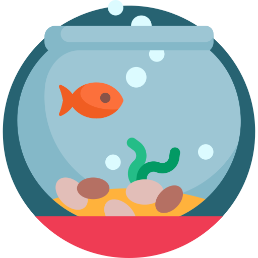

E-Quarium


Water : Soft, Warm and Acidic
Max Size : 8 cm (3.1 in)
Feeding : Omnivorous, this fish sifts the substrate for plant material and small organisms. It is capable of feeding in midwater or on the surface.
Compatibility : can be kept in some community aquariums, but assertive, active, or aggressive-feeding fish are not ideal companions for this relatively shy species
Breeding : In aquariums at 27 °C (80 °F), eggs take about 60 hours to hatch. During this time, the clutch is primarily cared for by the female, which fans the eggs and often adds sand to the clutch. Newly hatched fry are transported by the mouths of the parents to the shallow pits dug. They are biparental and open spawning